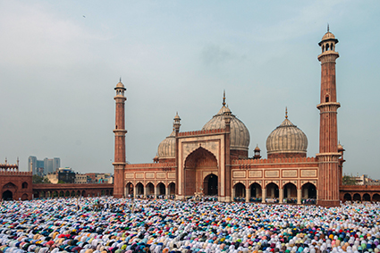
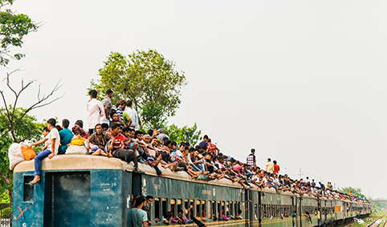
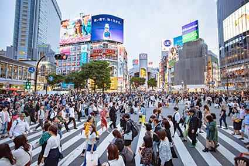
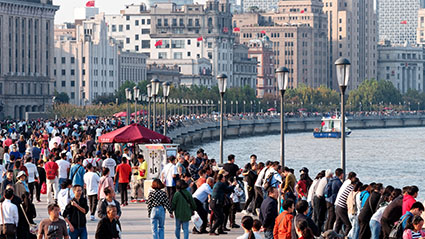

Com uma população de, aproximadamente, 1,3 bilhão de habitantes, a Índia é o segundo país mais populoso do mundo. Vista de Nova Délhi, Índia, em 2020. Crédito: SUHAIL SURI/PIXABAY

Concentração de pessoas em Dhaka, Bangladesh, em 2019. Com cerca de 166 milhões de habitantes, Bangladesh é o oitavo país do mundo em número de habitantes. Crédito: MD FAYSAL AHMED/PIXABAY

O Japão tem cerca de 125 milhões de habitantes. Tóquio, sua capital, na imagem de 2019, é uma das maiores metrópoles do mundo em número de habitantes. Crédito: YELLOW CAT/SHUTTERSTOCK.COM

A China é o país mais populoso do mundo com cerca de 1,4 bilhão de habitantes. A cidade chinesa de Xangai, vista na imagem em 2014, é a mais populosa da China, com aproximadamente 26 milhões de habitantes. Crédito: ATIGER/SHUTTERSTOCK.COM